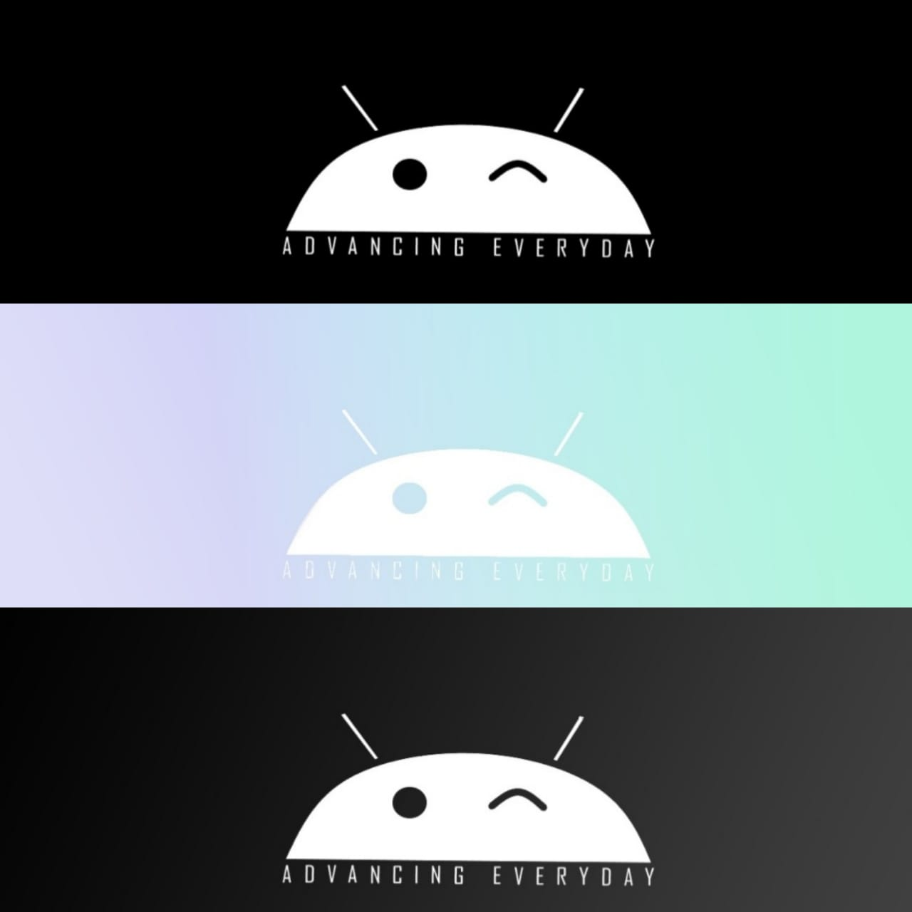

﴾BACKSTORIES OF LOGOS﴿
-


LOGOS FROM UDEMY
These all were made by me by practising from Udemy. The teacher taught us to make
these logos on Illustrator. It took me around an hour to make each. It made my Illustrator skills stronger and better.
-



LOGOS FOR IMAGINARY COMPANY
I made these all on the request of my brother for an imaginary company and the first two ones are variations of what appears on starting a mobile phone.
-

LILLIAM ICE CREAM LOGO DESIGN
This was also a self-project. I made this by taking a request from a fake client who required a logo for
his ice-cream shop. As it was related to ice-cream, I made it using colorful palette and also giving it an enticing look to attract children particularly.It was made on Illustrator.
-


INTERNSHIP PROJECT
Thes two logos were made by me on Illustrator. The first
one is for the company and the second one for one of their products. The first one is made with an intention to show how the company acts as a doctor to the businesses it
provides solutions to. The second one is a stylized monogram with a dot in the middle.